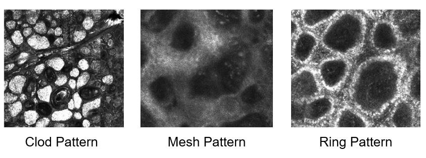
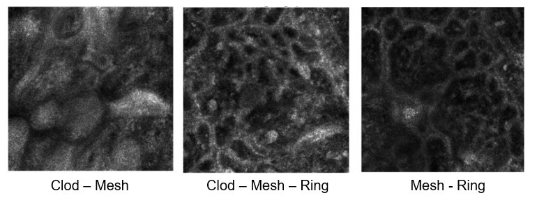
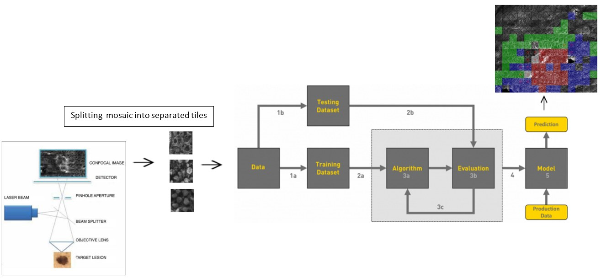
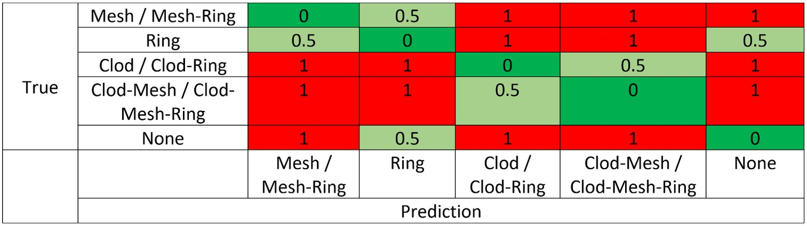
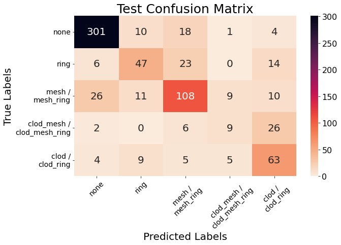
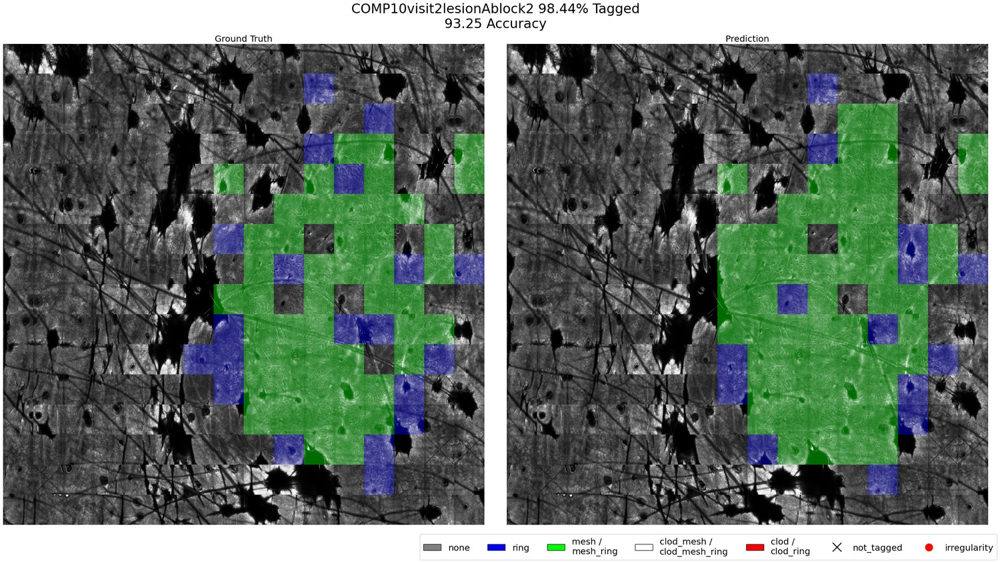
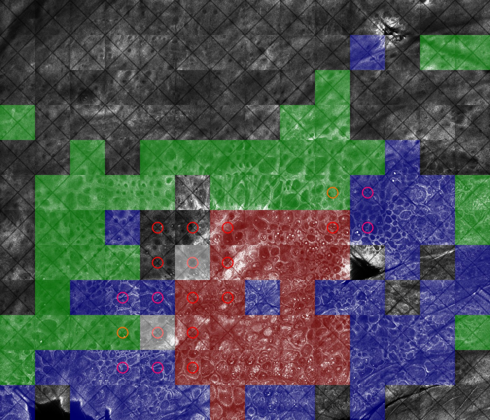
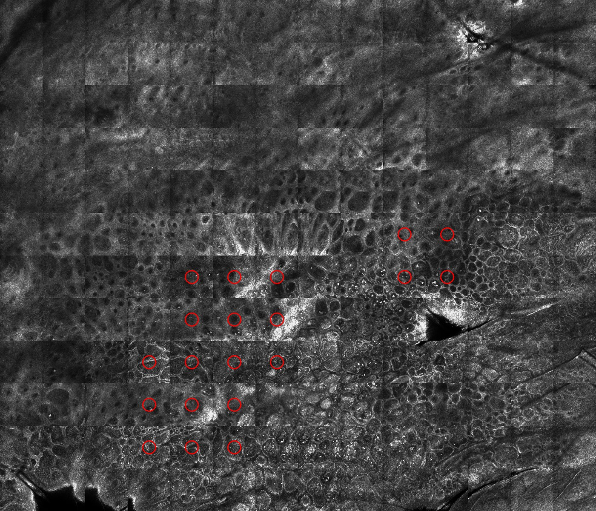
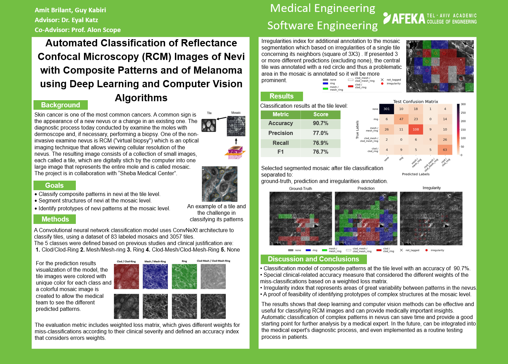

Afeka Tel-Aviv Academic College of Engineering · Sheba Medical Center
B.Sc. Final Project · July 2022
Reflectance Confocal Microscopy images skin at cellular resolution without cutting it, a "virtual biopsy". One lesion is captured as a mosaic of 35 to 196 tiles, each covering 0.5 mm × 0.5 mm. Every tile shows one of three cellular patterns (clod, mesh, ring), a combination of them, or background, and reading those patterns is how a dermatologist assesses a mole.
In real nevi the patterns nest inside one another, so a single tile routinely carries two or three at once. These composite patterns are hard for an expert to label consistently, which makes them hard to learn and hard to evaluate. This project, run with the dermatology research team at Sheba Medical Center, trains a ConvNeXt classifier over single tiles and paints its predictions back onto the mosaic to produce a tile-level segmentation of the whole lesion. Two decisions taken jointly with the clinicians shaped the result: eight pattern combinations were merged into five clinically equivalent classes, and a penalty matrix encoding the clinical severity of each confusion was built into both the loss function and the evaluation metric.


Three patterns plus background give eight possible combinations. Training on all eight produced poor results. Reviewing the confusions with the medical team led to a merge: combinations carrying the same clinical meaning were collapsed into a single class, a grouping drawn from the team's prior published work. Fewer, clinically meaningful classes improved accuracy and turned a predicted mosaic from a confetti of eight colours into something a clinician can read.
A second departure from the literature: published work segments RCM mosaics per pixel, but the clinicians asked for per tile. The tile is the unit they label and reason about, so a tile-level map is one they can act on directly.

Backbone. ConvNeXt-Tiny from timm, ImageNet-pretrained and adapted to single-channel 224 × 224 greyscale input. Trained with AdamW under a cosine schedule with warm-up, 100 epochs, batch 32, and aggressive augmentation including unconstrained rotation, since a nevus has no canonical orientation.
Cost-sensitive loss. Not every mistake costs the same. Confusing mesh with ring is minor; confusing clod with background is not. The clinicians assigned a penalty to every possible confusion, and that matrix is applied on top of a focal loss so the optimiser is pushed away from costly errors rather than merely wrong ones.

Reported scores are clinically weighted: false positives and negatives are scaled by their penalty before precision and recall are computed, then averaged by class support.
| Metric | Weighted (reported) | Plain |
|---|---|---|
| Accuracy | 90.7% | 73.6% |
| Precision | 77.0% | 73.2% |
| Recall | 76.9% | 73.6% |
| F1 | 76.7% | 73.0% |
| Class | Support | Precision | Recall | F1 |
|---|---|---|---|---|
| None | 334 | 88.8% | 90.1% | 89.5% |
| Mesh / Mesh-Ring | 164 | 67.5% | 65.9% | 66.7% |
| Ring | 90 | 61.0% | 52.2% | 56.3% |
| Clod / Clod-Ring | 86 | 53.8% | 73.3% | 62.1% |
| Clod-Mesh / Clod-Mesh-Ring | 43 | 37.5% | 20.9% | 26.9% |
Performance tracks class support almost exactly. The rarest composite class is the weakest by a wide margin, and it is also the hardest one for a human to label. Most of its misses go to clod / clod-ring, a confusion the penalty matrix rates as low severity. The honest read: the model reliably separates lesion from background and is competent on mesh, but it has not solved the composite classes. That needs more labelled composite tiles, not a different architecture.


A fully coloured mosaic can still be too much information at once. A second layer flags disagreement between neighbours: a 3 × 3 window slides across the mosaic, and where the nine tiles carry three or more distinct predictions, the centre tile is circled in red. Heterogeneous, asymmetric regions are exactly what clinicians are trained to treat as suspicious, so this reduces a wall of colour to a short list of places to look.



{kind=link}